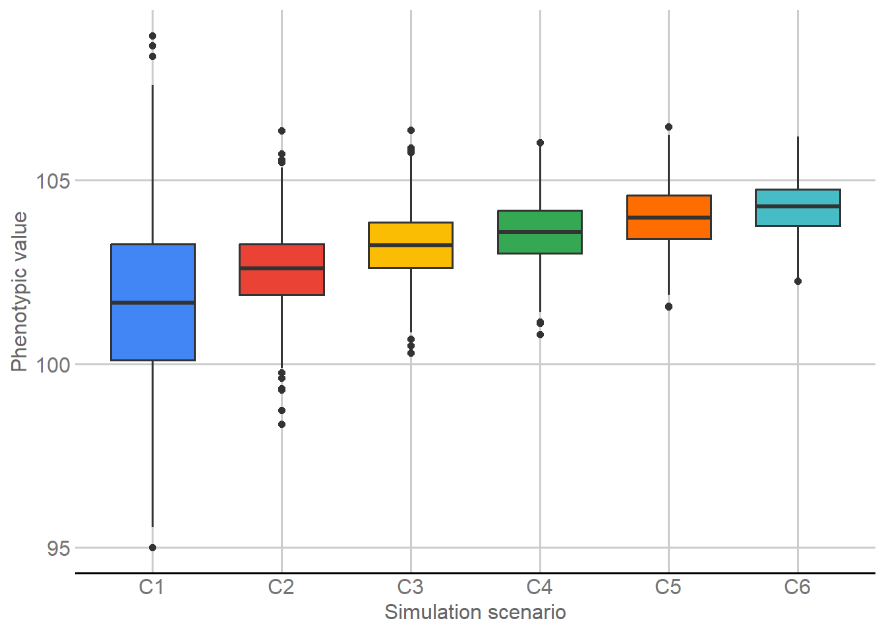
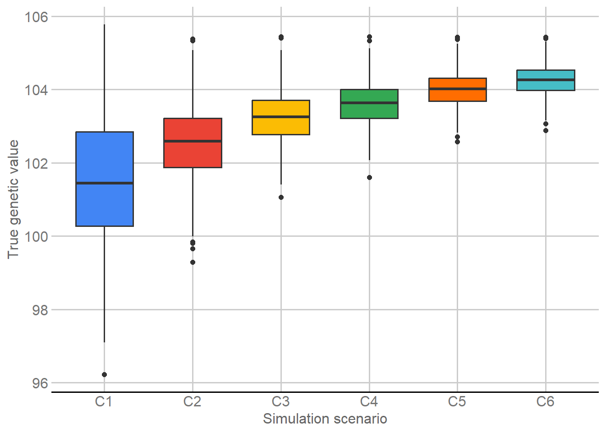
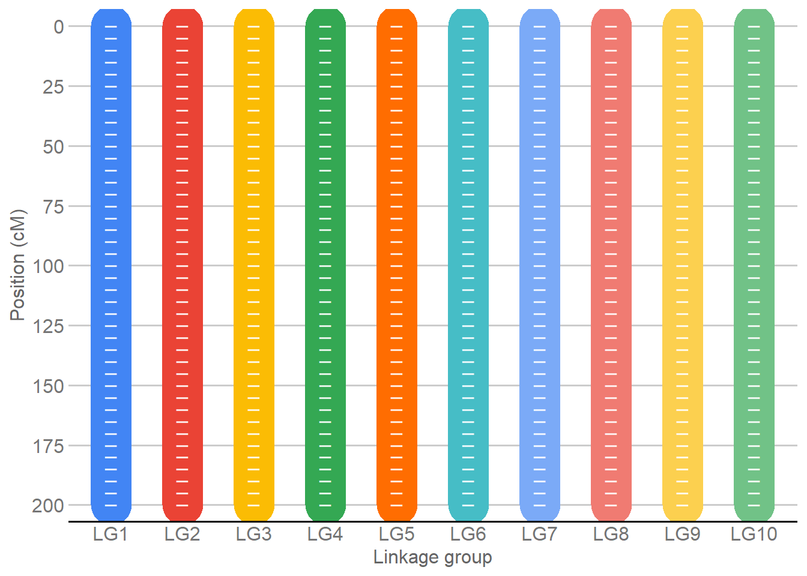
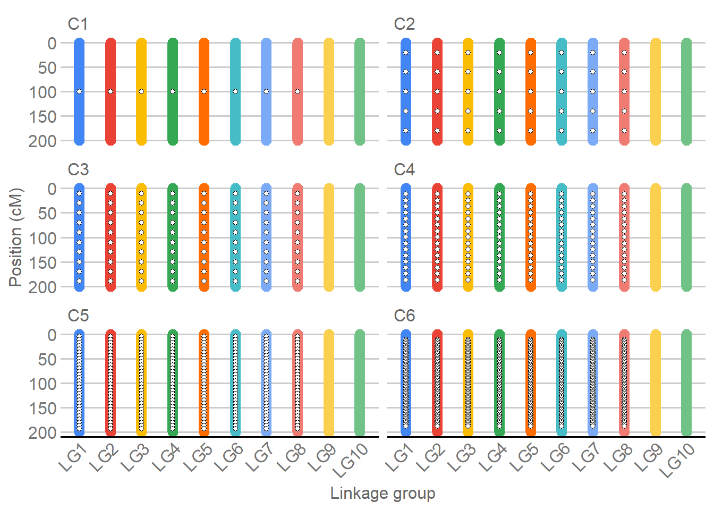
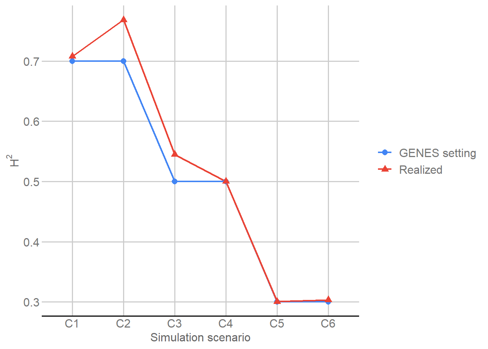
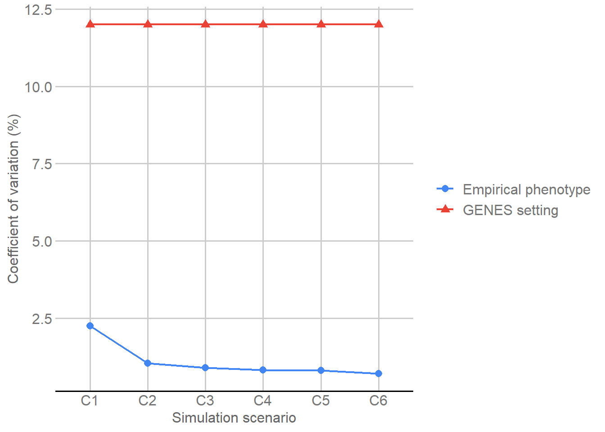
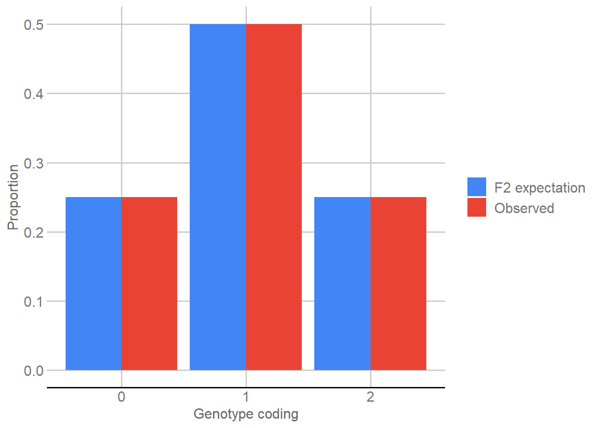

Simulated genomic data: structure and preparation
Weverton Gomes da Costa
2026-09-04
Last updated: 2026-09-04
Checks: 7 0
Knit directory:
Genomic-Prediction-using-Regularized-Artificial-Neural-Networks/
This reproducible R Markdown analysis was created with workflowr (version 1.7.2). The Checks tab describes the reproducibility checks that were applied when the results were created. The Past versions tab lists the development history.
Great! Since the R Markdown file has been committed to the Git repository, you know the exact version of the code that produced these results.
Great job! The global environment was empty. Objects defined in the global environment can affect the analysis in your R Markdown file in unknown ways. For reproduciblity it’s best to always run the code in an empty environment.
The command set.seed(20260821) was run prior to running
the code in the R Markdown file. Setting a seed ensures that any results
that rely on randomness, e.g. subsampling or permutations, are
reproducible.
Great job! Recording the operating system, R version, and package versions is critical for reproducibility.
Nice! There were no cached chunks for this analysis, so you can be confident that you successfully produced the results during this run.
Great job! Using relative paths to the files within your workflowr project makes it easier to run your code on other machines.
Great! You are using Git for version control. Tracking code development and connecting the code version to the results is critical for reproducibility.
The results in this page were generated with repository version 1bbb516. See the Past versions tab to see a history of the changes made to the R Markdown and HTML files.
Note that you need to be careful to ensure that all relevant files for
the analysis have been committed to Git prior to generating the results
(you can use wflow_publish or
wflow_git_commit). workflowr only checks the R Markdown
file, but you know if there are other scripts or data files that it
depends on. Below is the status of the Git repository when the results
were generated:
Ignored files:
Ignored: .Rhistory
Ignored: .Rproj.user/
Ignored: .github/
Ignored: .local/
Ignored: code/legacy/
Ignored: data/dados_reais/Fenótipos 2014_2015_2016_C.arabica (1).xlsx
Ignored: data/dados_reais/Fenótipos 2014_2015_2016_C.arabica.xlsx
Ignored: data/dados_reais/FiltStep1_minQ10.0_minDP3_DPrange15-maxMeanDepth750_miss0.4_maf0.01_mac1_EMB_291701_SNPs_Raw.vcf.012.012
Ignored: data/dados_reais/FiltStep1_minQ10.0_minDP3_DPrange15-maxMeanDepth750_miss0.4_maf0.01_mac1_EMB_291701_SNPs_Raw.vcf.012.012.indv
Ignored: data/dados_reais/FiltStep1_minQ10.0_minDP3_DPrange15-maxMeanDepth750_miss0.4_maf0.01_mac1_EMB_291701_SNPs_Raw.vcf.012.012.pos
Ignored: data/dados_reais/FiltStep1_minQ10_minDP3_DPrange15-750_miss0.4_maf0.01_mac1_EMB_291701_filt1_snps_RAW.012.indv.txt
Ignored: data/dados_reais/FiltStep1_minQ10_minDP3_DPrange15-750_miss0.4_maf0.01_mac1_EMB_291701_filt1_snps_RAW.012.pos.txt
Ignored: data/dados_reais/FiltStep1_minQ10_minDP3_DPrange15-750_miss0.4_maf0.01_mac1_EMB_291701_filt1_snps_RAW.012.txt
Ignored: data/dados_reais/Rótulos C. arabica_Proj_Piloto.xlsx
Ignored: data/dados_reais/Rótulos Novos SNPs.xls
Ignored: data/dados_reais/dados_cafe.xlsx
Ignored: data/dados_reais/fpls-09-01934.pdf
Ignored: data/dados_reais/geno_real.rds
Ignored: data/dados_reais/pheno_real.rds
Ignored: data/dados_reais/plants-13-01876-v2.pdf
Ignored: data/dados_reais/pos_geno_real.rds
Ignored: renv/library/
Ignored: renv/staging/
Untracked files:
Untracked: audit_m01_preprocessed_rds.py
Untracked: m01_output_hashes_after.txt
Untracked: m01_output_hashes_after_v2.txt
Untracked: m01_output_hashes_before.txt
Untracked: m01_output_hashes_before_v2.txt
Untracked: output/simulated/m01/
Untracked: refactor_m01_direct_reader_flow.py
Untracked: refine_m01_signal_cv_ld.py
Untracked: sed_rds.py
Untracked: verify_m01_direct_reader_flow.py
Untracked: verify_m01_direct_reader_flow_v2.py
Untracked: verify_m01_direct_reader_flow_v3.py
Untracked: verify_m01_post_render_v4.py
Unstaged changes:
Modified: output/simulated/audit/preprocessed_simulated_common.rds
Modified: output/simulated/audit/simulated_audit_summary.csv
Modified: renv.lock
Note that any generated files, e.g. HTML, png, CSS, etc., are not included in this status report because it is ok for generated content to have uncommitted changes.
These are the previous versions of the repository in which changes were
made to the R Markdown (analysis/simulated_data_audit.Rmd)
and HTML (docs/simulated_data_audit.html) files. If you’ve
configured a remote Git repository (see ?wflow_git_remote),
click on the hyperlinks in the table below to view the files as they
were in that past version.
| File | Version | Author | Date | Message |
|---|---|---|---|---|
| Rmd | 1bbb516 | github-actions[bot] | 2026-09-04 | Clean M01 reader text and formatting residues |
| Rmd | f60236c | github-actions[bot] | 2026-09-04 | Refine M01 explanatory points and remove Section 6 duplication |
| Rmd | 39efc7d | github-actions[bot] | 2026-09-04 | Polish M01 structure and remove redundant QTL map |
| Rmd | d009e58 | Weverton Gomes da Costa | 2026-09-03 | Refine M01 explanations, chromosome map, hidden TIFF saves, and LD presentation |
| Rmd | 374e96c | Weverton Gomes da Costa | 2026-09-03 | Refine M01 reader flow, figures, GENES context, and QTL/LD presentation |
| html | c8124ab | WevertonGomesCosta | 2026-09-02 | Refresh integrated M01-M05 reproducibility metadata |
| html | 4006ea8 | WevertonGomesCosta | 2026-09-01 | Rebuild M01 after final editorial polish |
| Rmd | 92e708b | Weverton Gomes da Costa | 2026-09-01 | Polish final M01 map and LD explanations |
| Rmd | 6b30da1 | WevertonGomesCosta | 2026-09-01 | Refine M01 editorial structure and tables |
| html | 6b30da1 | WevertonGomesCosta | 2026-09-01 | Refine M01 editorial structure and tables |
| Rmd | 217e778 | WevertonGomesCosta | 2026-09-01 | Complete reader-first didactic cleanup |
| html | 217e778 | WevertonGomesCosta | 2026-09-01 | Complete reader-first didactic cleanup |
| Rmd | dea5684 | github-actions[bot] | 2026-08-31 | Simplify tutorials while preserving audit contracts |
| html | 7a3fbcd | WevertonGomesCosta | 2026-08-31 | Refresh tutorial site after final build |
| Rmd | f229ff3 | WevertonGomesCosta | 2026-08-31 | Refactor data audit and validation as tutorials |
| html | f229ff3 | WevertonGomesCosta | 2026-08-31 | Refactor data audit and validation as tutorials |
| html | f228245 | WevertonGomesCosta | 2026-08-31 | Publish reader-focused simulated workflow |
| Rmd | 11c3622 | WevertonGomesCosta | 2026-08-29 | Refine simulated data audit for readers |
| Rmd | 1197c22 | WevertonGomesCosta | 2026-08-29 | Guide readers through simulated data structures |
| html | fa907f6 | WevertonGomesCosta | 2026-08-28 | Publish audited workflowr documentation |
| Rmd | 6e89cba | WevertonGomesCosta | 2026-08-28 | Clarify canonical simulated-data contract |
| Rmd | 3eee406 | WevertonGomesCosta | 2026-08-28 | Add self-contained caption to LD figure |
| Rmd | 6015ee6 | WevertonGomesCosta | 2026-08-28 | Explain linkage disequilibrium audit design |
| Rmd | afb5bb0 | WevertonGomesCosta | 2026-08-28 | Explain simulated genotype quality-control diagnostics |
| Rmd | 66fc37a | WevertonGomesCosta | 2026-08-28 | Map simulated input files to scientific roles |
| Rmd | 78bf34c | Weverton Gomes da Costa | 2026-08-28 | Restore unchanged audit output formatting |
| Rmd | 97f4141 | Weverton Gomes da Costa | 2026-08-28 | Clarify Model=2 interpretation in simulated data audit |
| Rmd | 0b8a4f6 | WevertonGomesCosta | 2026-08-28 | Revise canonical workflow documentation and scientific narrative |
| html | 0b8a4f6 | WevertonGomesCosta | 2026-08-28 | Revise canonical workflow documentation and scientific narrative |
| html | f7779fd | WevertonGomesCosta | 2026-08-27 | Build site. |
| html | 3caadce | WevertonGomesCosta | 2026-08-27 | Build site. |
| Rmd | 0ec25da | WevertonGomesCosta | 2026-08-27 | refactor: organize canonical outputs and local runtime artifacts |
| html | e48bb57 | WevertonGomesCosta | 2026-08-27 | Build site. |
| Rmd | f9c736e | WevertonGomesCosta | 2026-08-27 | refactor: establish canonical simulated genomic prediction workflow |
| html | f9c736e | WevertonGomesCosta | 2026-08-27 | refactor: establish canonical simulated genomic prediction workflow |
1. Purpose
This module introduces the simulated genomic population used throughout the prediction workflow. The data were generated with GENES, a software package for experimental statistics, quantitative genetics, and genetic simulation (Cruz, 2013, 2016).
The module has four reader-facing goals:
- Identify the input data: distinguish phenotype, true genetic value, genotype matrix, genetic map, parental genotypes, and simulation settings.
- Make the data structure explicit: show how individuals, scenarios, markers, linkage groups, and QTL are organized before model fitting.
- Describe the simulated population: summarize genetic signal, segregation, marker properties, and linkage disequilibrium (LD).
- Prepare one shared object: preserve the same individuals, marker coding, map, scenarios, and QTL for the validation, GBLUP-ADE, ANN, and comparison modules.
No genomic prediction model is fitted here. The purpose is to establish what the data contain, how the main quantities are represented, and which objects are passed unchanged to the next stages of the workflow.
2. Packages and reproducibility
2.1 Packages
Three packages support different parts of the reader-facing analysis:
knitrconverts R objects into formatted HTML tables, allowing dimensions, simulation settings, genotype summaries, and LD values to be inspected directly in the page.ggplot2constructs every statistical and genomic figure, including the phenotype distributions, chromosome-like linkage-group map, QTL distribution, F2 segregation, and LD curve.ggthemesprovidestheme_gdocs()and the matching Google Docs color scales so all figures share the same visual language.
The comments in the code provide a short reminder of these roles when the reader executes the chunk independently.
library(knitr) # Format data summaries as readable HTML tables.
library(ggplot2) # Construct the statistical and genomic figures.
library(ggthemes) # Apply the Google Docs theme and matching color scales.For figure output, two rules are applied consistently:
- figures shown in the HTML use
theme_gdocs()and Google Docs color/fill scales whenever categories are distinguished by color; - publication-quality TIFF copies are written to
output/simulated/m01/figures/, while theggsave()commands remain ininclude=FALSEchunks so file-export instructions do not interrupt the analytical code shown to the reader.
2.2 Random seed
Most quantities in this module are fixed because they are read directly from the GENES simulation files. The random seed is needed for only one operation:
- Fixed inputs: phenotype, true genetic values, genotypes, genetic map, parental genotypes, and scenario definitions do not change with the seed.
- Random operation: 5,000 marker pairs from different linkage groups are sampled in Section 10 to obtain a reproducible background LD reference.
Setting the seed here therefore reproduces the LD reference without modifying any of the simulated data.
3. Phenotypic and true genetic values
The first two GENES files describe complementary quantities for the same 1,000 individuals and six scenarios:
- Phenotype: the observed response that may be used for model fitting when an individual belongs to an analysis set.
- True genetic value: the known simulated genetic component, reserved for evaluating predictions rather than fitting or partition construction.
- Alignment: row
iin both matrices refers to the same simulated individual, so row order must remain unchanged throughout the workflow.
3.1 Phenotypic values
The phenotypic file is read before any transformation so the reader can see how the response is organized. The chunk performs three steps:
- read the matrix with individuals in rows and scenarios in columns;
- label the six scenario columns as C1-C6;
- reshape only a plotting copy and use boxplots to compare center, dispersion, and extreme values across scenarios.
The original phenotype matrix remains unchanged for all later calculations.
# Read phenotypes with individuals in rows and scenarios in columns.
phenotype <- as.matrix(
read.table(
"data/dados_simulados/DG#gen_F2_Vfen.txt",
header = FALSE
)
)
colnames(phenotype) <- paste0("C", 1:6)
# Reshape only a plotting copy; the original matrix remains unchanged.
phenotype_long <- stack(as.data.frame(phenotype))
names(phenotype_long) <- c("Phenotype", "Scenario")
p_phenotype <- ggplot(
phenotype_long,
aes(
x = Scenario,
y = Phenotype,
fill = Scenario
)
) +
geom_boxplot(
width = 0.65,
show.legend = FALSE
) +
scale_fill_gdocs() +
labs(
x = "Simulation scenario",
y = "Phenotypic value"
) +
theme_gdocs()
print(p_phenotype)
Distribution of phenotypic values across the six simulation scenarios.
The phenotype object now establishes two facts used later:
- Dimensions: 1000 individuals are represented in each of 6 scenarios.
- Use in prediction: phenotype is the response available to a model only for individuals belonging to the corresponding analysis set defined by the validation design.
3.2 True genetic values
Because the population is simulated, the genetic value underlying each individual is known. Its role differs from the phenotype:
- it is not used to create validation partitions;
- it is not used to tune or fit the prediction models;
- it is retained as the external target used to evaluate predictions for held-out individuals.
The chunk reads the matrix with the same C1-C6 structure and creates a plotting copy. Comparing its distributions with the phenotype figure separates variation in the known genetic component from variation in the observed response.
# Read the known genetic values generated by GENES.
true_genetic_value <- as.matrix(
read.table(
"data/dados_simulados/DG#gen_F2_Vgen.dat",
header = FALSE
)
)
colnames(true_genetic_value) <- paste0("C", 1:6)
# Reshape a copy only for the reader-facing figure.
true_g_long <- stack(as.data.frame(true_genetic_value))
names(true_g_long) <- c("True_genetic_value", "Scenario")
p_true_g <- ggplot(
true_g_long,
aes(
x = Scenario,
y = True_genetic_value,
fill = Scenario
)
) +
geom_boxplot(
width = 0.65,
show.legend = FALSE
) +
scale_fill_gdocs() +
labs(
x = "Simulation scenario",
y = "True genetic value"
) +
theme_gdocs()
print(p_true_g)
Distribution of true genetic values across the six simulation scenarios.
This second response-related object has three properties to retain:
- Same dimensions: 1000 individuals x six scenarios.
- Same row order: every row remains paired with the corresponding phenotype row.
- Different analytical role: the values are reserved for held-out evaluation rather than model fitting.
4. Genotypic data
4.1 Genotype matrix
The GENES genotype file must first be oriented in the same direction as the response matrices. The reader should note four points:
- Source orientation: markers are stored in rows and individuals in columns.
- Analysis orientation: the matrix is transposed once, producing individuals in rows and markers in columns.
- Observed coding: the original genotype states are
0,1, and2. - Displayed sample: ten individuals and twelve markers spread across all 4,010 marker columns are printed so the discrete matrix structure can be seen directly; a boxplot would not convey that structure.
The complete matrix, not the displayed sample, is retained for every subsequent calculation.
# Read the GENES marker file and orient it as individuals x markers.
geno_012 <- t(
as.matrix(
read.table(
"data/dados_simulados/genoma_mapa.txt",
header = FALSE
)
)
)
# Select markers distributed from the beginning to the end of the matrix.
marker_sample <- unique(
round(
seq(
1,
ncol(geno_012),
length.out = 12
)
)
)
# Show a small real sample while retaining the complete matrix for analysis.
genotype_sample <- data.frame(
Individual = 1:10,
geno_012[
1:10,
marker_sample,
drop = FALSE
],
check.names = FALSE
)
names(genotype_sample)[-1] <- paste0("M", marker_sample)
genotype_sample |>
knitr::kable(
format = "html",
caption = "Sample of 10 individuals and 12 markers distributed across the genotype matrix",
row.names = FALSE,
table.attr = 'class="table table-striped table-hover table-bordered"'
)| Individual | M1 | M365 | M730 | M1094 | M1459 | M1823 | M2188 | M2552 | M2917 | M3281 | M3646 | M4010 |
|---|---|---|---|---|---|---|---|---|---|---|---|---|
| 1 | 1 | 2 | 2 | 1 | 1 | 2 | 2 | 1 | 1 | 0 | 2 | 1 |
| 2 | 1 | 2 | 1 | 1 | 1 | 2 | 0 | 1 | 1 | 2 | 1 | 0 |
| 3 | 1 | 1 | 1 | 1 | 0 | 1 | 2 | 2 | 0 | 1 | 2 | 1 |
| 4 | 0 | 0 | 0 | 1 | 2 | 1 | 0 | 1 | 1 | 1 | 2 | 1 |
| 5 | 1 | 1 | 2 | 1 | 2 | 2 | 2 | 2 | 0 | 1 | 0 | 1 |
| 6 | 1 | 2 | 0 | 0 | 1 | 0 | 1 | 1 | 1 | 2 | 2 | 1 |
| 7 | 2 | 2 | 1 | 2 | 1 | 0 | 0 | 0 | 2 | 1 | 1 | 1 |
| 8 | 2 | 1 | 1 | 0 | 0 | 1 | 0 | 1 | 1 | 1 | 2 | 2 |
| 9 | 1 | 2 | 2 | 1 | 1 | 1 | 1 | 2 | 1 | 1 | 2 | 0 |
| 10 | 1 | 1 | 0 | 2 | 2 | 1 | 1 | 0 | 2 | 2 | 1 | 1 |
The displayed sample makes the structure of the complete genotype object explicit:
- Dimensions: 1000 individuals x 4010 markers.
- Observed states: 0, 1, 2.
- Interpretation: these three discrete states are the genotype classes generated for the simulated F2 population.
4.2 Genotype coding used in the prediction models
The prediction models use the same genotype calls centered on zero. The recoding is deliberately simple:
0 -> -1;1 -> 0;2 -> 1.
Only the numerical scale changes. No individual or marker is removed, and the underlying genotype class is preserved. The table below makes the transformation explicit before the recoded matrix is saved for downstream analyses.
geno_m101 <- geno_012 - 1L
data.frame(
Original = c(0, 1, 2),
Analysis_coding = c(-1, 0, 1)
) |>
knitr::kable(
format = "html",
caption = "Genotype coding used in the prediction analyses",
row.names = FALSE,
table.attr = 'class="table table-striped table-hover table-bordered"'
)| Original | Analysis_coding |
|---|---|
| 0 | -1 |
| 1 | 0 |
| 2 | 1 |
After recoding, the prediction matrix preserves the data structure:
- the same 1,000 individuals remain in the same row order;
- the same 4,010 markers remain in the same column order;
- only the numerical coding changes from
0/1/2to-1/0/1.
5. Genetic map
The genetic map supplies the genomic organization needed to interpret marker positions, QTL locations, and LD. The GENES text file is read in two conceptual parts:
- the first 12 lines describe the map globally;
- marker-level records start on line 13 and provide linkage group, marker order, marker name, and position in centimorgans (cM).
For later matching, a global marker index from 1 to 4,010 is added. This index is the bridge between the QTL numbers stored in the scenario file and their positions on the genetic map.
# Read the marker-level portion of the GENES genetic-map file.
genetic_map <- read.table(
"data/dados_simulados/genoma.txt",
header = FALSE,
sep = ",",
skip = 12,
fill = TRUE,
strip.white = TRUE,
fileEncoding = "latin1",
stringsAsFactors = FALSE
)
genetic_map <- genetic_map[, 1:5]
names(genetic_map) <- c(
"LG",
"Marker_within_LG",
"Type",
"Marker",
"Position_cM"
)
# Convert the map fields used in numerical calculations.
genetic_map$LG <- as.integer(genetic_map$LG)
genetic_map$Marker_within_LG <- as.integer(genetic_map$Marker_within_LG)
genetic_map$Position_cM <- as.numeric(genetic_map$Position_cM)
genetic_map$Global_marker <- seq_len(nrow(genetic_map))
genetic_map$LG_label <- factor(
paste0("LG", genetic_map$LG),
levels = paste0("LG", 1:10)
)
map_summary <- data.frame(
Linkage_group = paste0("LG", 1:10),
Markers = as.integer(table(genetic_map$LG)),
Start_cM = as.numeric(
tapply(genetic_map$Position_cM, genetic_map$LG, min)
),
End_cM = as.numeric(
tapply(genetic_map$Position_cM, genetic_map$LG, max)
)
)
map_summary |>
knitr::kable(
format = "html",
caption = "Structure of the simulated genetic map",
row.names = FALSE,
table.attr = 'class="table table-striped table-hover table-bordered"'
)| Linkage_group | Markers | Start_cM | End_cM |
|---|---|---|---|
| LG1 | 401 | 0 | 200 |
| LG2 | 401 | 0 | 200 |
| LG3 | 401 | 0 | 200 |
| LG4 | 401 | 0 | 200 |
| LG5 | 401 | 0 | 200 |
| LG6 | 401 | 0 | 200 |
| LG7 | 401 | 0 | 200 |
| LG8 | 401 | 0 | 200 |
| LG9 | 401 | 0 | 200 |
| LG10 | 401 | 0 | 200 |
The numerical map can be summarized before QTL are introduced:
- 10 linkage groups (LG1-LG10);
- 401 markers per linkage group;
- 0-200 cM covered by each group;
- 0.5 cM between consecutive markers;
- 4,010 markers in the complete map.
A chromosome-like representation is used below to make this organization easier to read. Each colored body represents one linkage group and the short white ticks show every tenth marker. Displaying a regular subset of marker ticks keeps the 0.5-cM structure visible without drawing 401 overlapping marks on each linkage group.
# Create one chromosome-like body for each linkage group.
chromosome_map <- data.frame(
LG = 1:10,
LG_label = factor(
paste0("LG", 1:10),
levels = paste0("LG", 1:10)
),
Start_cM = 0,
End_cM = 200
)
# Show a regular subset of marker positions to keep the map legible.
marker_ticks <- genetic_map[
genetic_map$Marker_within_LG %% 10 == 1,
c("LG", "LG_label", "Position_cM")
]
p_genetic_map <- ggplot() +
geom_segment(
data = chromosome_map,
aes(
x = LG_label,
xend = LG_label,
y = Start_cM,
yend = End_cM,
color = LG_label
),
linewidth = 12,
lineend = "round",
show.legend = FALSE
) +
geom_point(
data = marker_ticks,
aes(
x = LG_label,
y = Position_cM
),
shape = 95,
size = 4.2,
color = "white",
alpha = 0.85
) +
scale_color_gdocs() +
scale_y_reverse(
breaks = seq(0, 200, 25),
expand = expansion(mult = c(0.035, 0.035))
) +
labs(
x = "Linkage group",
y = "Position (cM)"
) +
theme_gdocs()
print(p_genetic_map)
Chromosome-like representation of the ten linkage groups in the simulated genetic map. Colors identify linkage groups and white ticks show every tenth marker position.
With the marker map defined, the simulated genetic architecture can be added without mixing the two levels of information:
- Marker framework: Section 5 establishes LG1-LG10, marker order, and map positions independently of the simulated QTL.
- QTL architecture: Section 6 places the QTL from each scenario on that fixed framework and compares their distribution across C1-C6.
Keeping these layers separate lets the reader first understand where markers are located and then examine which of those positions were selected as QTL in each scenario.
6. Simulation settings and QTL architecture
6.1 GENES software and genetic model
The six scenarios were generated with GENES (Cruz,
2013, 2016). The control file specifies Model = 2,
represented by
\[ Y_i = \mu + \sum_j a_j + \sum_j \sum_{j'} \alpha_j\alpha_{j'} + \varepsilon_i . \]
The terms have distinct roles in the simulation:
- \(Y_i\): phenotype generated for individual \(i\);
- \(\mu\): overall mean;
- \(\sum_j a_j\): contributions associated with loci;
- \(\sum_j\sum_{j'}\alpha_j\alpha_{j'}\): pairwise interaction contributions between loci;
- \(\varepsilon_i\): residual component.
This equation describes data generation, not the GBLUP-ADE or ANN prediction models fitted later.
6.2 Scenario settings and QTL distribution
The control file contains six repeated blocks, one for each scenario C1-C6. The code reads the blocks directly because the fields occur in a fixed order. The reader can follow the preparation in four steps:
- Read the scenario settings: number of QTL, specified heritability, genetic model, constant, scale, and CV setting.
- Read the QTL indices: each selected QTL is stored as an integer marker index in the control file.
- Match QTL to the genetic map: each index is converted to its linkage group and position in cM using the global marker index from Section 5.
- Reuse one QTL table: the matched positions are used for the figure, the count table, and the object passed to later modules.
# Read the six scenario blocks written by GENES.
control_raw <- readLines(
"data/dados_simulados/controlegenetico#1.dat",
warn = FALSE,
encoding = "latin1"
)
# Transliterate accented text so the fixed block positions are read consistently.
control_ascii <- iconv(
control_raw,
from = "latin1",
to = "ASCII//TRANSLIT",
sub = ""
)
scenario_start <- grep(
"^Variavel",
control_ascii
)
control_table <- data.frame(
Scenario = paste0("C", 1:6),
Variable = NA_real_,
Total_loci = NA_real_,
QTL_N = NA_real_,
gmd = NA_real_,
Model = NA_real_,
H2_nominal = NA_real_,
Constant = NA_real_,
Scale = NA_real_,
CV_setting = NA_real_
)
qtl_lists <- vector(
"list",
length(scenario_start)
)
# Recover the settings and QTL indices scenario by scenario.
for (i in seq_along(scenario_start)) {
s <- scenario_start[i]
control_table$Variable[i] <- as.numeric(
trimws(sub("^[^,]*,", "", control_ascii[s]))
)
control_table$Total_loci[i] <- as.numeric(
trimws(sub("^[^,]*,", "", control_ascii[s + 1]))
)
control_table$QTL_N[i] <- as.numeric(
trimws(sub("^[^,]*,", "", control_ascii[s + 2]))
)
# QTL values are marker indices and are therefore kept as integers.
qtl_lists[[i]] <- as.integer(
scan(
text = control_ascii[s + 3],
what = numeric(),
quiet = TRUE
)
)
control_table$gmd[i] <- as.numeric(
trimws(sub("^[^,]*,", "", control_ascii[s + 5]))
)
control_table$Model[i] <- as.numeric(
trimws(sub("^[^,]*,", "", control_ascii[s + 6]))
)
control_table$H2_nominal[i] <- as.numeric(
trimws(sub("^[^,]*,", "", control_ascii[s + 7]))
)
control_table$Constant[i] <- as.numeric(
trimws(sub("^[^,]*,", "", control_ascii[s + 8]))
)
control_table$Scale[i] <- as.numeric(
trimws(sub("^[^,]*,", "", control_ascii[s + 9]))
)
control_table$CV_setting[i] <- as.numeric(
trimws(sub("^[^,]*,", "", control_ascii[s + 10]))
)
}
# Match each QTL index to its linkage group and map position.
qtl_rows <- data.frame(
Scenario = character(),
QTL_index = integer(),
LG = integer(),
Position_cM = numeric()
)
for (i in seq_along(qtl_lists)) {
qtl <- qtl_lists[[i]]
qtl_rows <- rbind(
qtl_rows,
data.frame(
Scenario = paste0("C", i),
QTL_index = qtl,
LG = genetic_map$LG[qtl],
Position_cM = genetic_map$Position_cM[qtl]
)
)
}
qtl_rows$LG_label <- factor(
paste0("LG", qtl_rows$LG),
levels = paste0("LG", 1:10)
)
control_table |>
knitr::kable(
format = "html",
digits = 3,
caption = "Settings used to generate the six simulation scenarios in GENES",
row.names = FALSE,
table.attr = 'class="table table-striped table-hover table-bordered"'
)| Scenario | Variable | Total_loci | QTL_N | gmd | Model | H2_nominal | Constant | Scale | CV_setting |
|---|---|---|---|---|---|---|---|---|---|
| C1 | 1 | 4010 | 8 | 0.5 | 2 | 0.7 | 100 | 1 | 12 |
| C2 | 2 | 4010 | 40 | 0.5 | 2 | 0.7 | 100 | 1 | 12 |
| C3 | 3 | 4010 | 80 | 0.5 | 2 | 0.5 | 100 | 1 | 12 |
| C4 | 4 | 4010 | 120 | 0.5 | 2 | 0.5 | 100 | 1 | 12 |
| C5 | 5 | 4010 | 240 | 0.5 | 2 | 0.3 | 100 | 1 | 12 |
| C6 | 6 | 4010 | 480 | 0.5 | 2 | 0.3 | 100 | 1 | 12 |
The six scenarios differ in two main characteristics that should be interpreted together:
- QTL number increases: 8, 40, 80, 120, 240, and 480 from C1 to C6;
- specified heritability decreases: 0.7 in C1-C2, 0.5 in C3-C4, and 0.3 in C5-C6;
- other settings remain fixed:
gmd = 0.5,Model = 2,Constant = 100,Scale = 1, andCV = 12; - LG9 and LG10 contain no simulated QTL: they retain markers but provide reference genomic regions without a true QTL signal.
The single QTL figure below is therefore organized by scenario. Each panel uses the chromosome-like linkage-group representation from Section 5 and places all QTL for that scenario on their mapped positions. This avoids repeating a second combined QTL map while still showing both genomic location and the increase in QTL density across C1-C6.
# Draw a chromosome-like body for every linkage group in every panel.
qtl_reference <- expand.grid(
Scenario = paste0("C", 1:6),
LG_label = paste0("LG", 1:10),
stringsAsFactors = FALSE
)
qtl_reference$LG_label <- factor(
qtl_reference$LG_label,
levels = paste0("LG", 1:10)
)
qtl_reference$Start_cM <- 0
qtl_reference$End_cM <- 200
p_qtl <- ggplot() +
geom_segment(
data = qtl_reference,
aes(
x = LG_label,
xend = LG_label,
y = Start_cM,
yend = End_cM,
color = LG_label
),
linewidth = 3.6,
lineend = "round",
show.legend = FALSE
) +
geom_point(
data = qtl_rows,
aes(
x = LG_label,
y = Position_cM
),
shape = 21,
size = 1.6,
fill = "white",
color = "black",
stroke = 0.25
) +
facet_wrap(
~Scenario,
ncol = 2
) +
scale_color_gdocs() +
scale_y_reverse(
breaks = seq(0, 200, 50)
) +
labs(
x = "Linkage group",
y = "Position (cM)"
) +
theme_gdocs() +
theme(
axis.text.x = element_text(
angle = 45,
hjust = 1
)
)
print(p_qtl)
Positions of simulated QTL in each scenario. The linkage-group color scheme is constant across panels; LG9 and LG10 remain without QTL in all six scenarios.
The figure gives the spatial pattern, while the table below provides the exact counts needed to verify it:
- rows correspond to scenarios C1-C6;
- columns correspond to LG1-LG10;
- each cell is the number of QTL placed in that linkage group;
- the zero counts in LG9 and LG10 make their reference role explicit.
qtl_table <- table(
factor(qtl_rows$Scenario, levels = paste0("C", 1:6)),
factor(qtl_rows$LG, levels = 1:10)
)
qtl_by_lg <- data.frame(
Scenario = rownames(qtl_table),
unclass(qtl_table),
check.names = FALSE,
row.names = NULL
)
names(qtl_by_lg)[-1] <- paste0("LG", 1:10)
qtl_by_lg |>
knitr::kable(
format = "html",
caption = "Number of simulated QTL per linkage group",
row.names = FALSE,
table.attr = 'class="table table-striped table-hover table-bordered"'
)| Scenario | LG1 | LG2 | LG3 | LG4 | LG5 | LG6 | LG7 | LG8 | LG9 | LG10 |
|---|---|---|---|---|---|---|---|---|---|---|
| C1 | 1 | 1 | 1 | 1 | 1 | 1 | 1 | 1 | 0 | 0 |
| C2 | 5 | 5 | 5 | 5 | 5 | 5 | 5 | 5 | 0 | 0 |
| C3 | 10 | 10 | 10 | 10 | 10 | 10 | 10 | 10 | 0 | 0 |
| C4 | 15 | 15 | 15 | 15 | 15 | 15 | 15 | 15 | 0 | 0 |
| C5 | 30 | 30 | 30 | 30 | 30 | 30 | 30 | 30 | 0 | 0 |
| C6 | 60 | 60 | 60 | 60 | 60 | 60 | 60 | 60 | 0 | 0 |
7. Phenotypic and genetic signal
Because both phenotype \(Y\) and true genetic value \(G\) are known in the simulation, the remaining component can be calculated directly as
\[ E = Y - G. \]
The section then describes the strength of the simulated genetic signal using four complementary quantities:
- Phenotype-genetic correlation: how closely the observed phenotype follows the known genetic value.
- Genetic-residual correlation: whether the simulated genetic and remaining components show residual association.
- Realized heritability: the proportion obtained from the genetic and residual variances actually present in the generated population.
- Location and dispersion summaries: means and standard deviations used to describe the scale of each scenario.
Together these summaries provide context for why prediction difficulty differs among scenarios before any model is fitted.
scenario_names <- paste0("C", 1:6)
residual_value <- phenotype - true_genetic_value
cor_p_g <- numeric(6)
cor_g_e <- numeric(6)
h2_realized <- numeric(6)
var_g_over_var_p <- numeric(6)
# Calculate the signal summaries separately for each simulation scenario.
for (j in 1:6) {
cor_p_g[j] <- cor(
phenotype[, j],
true_genetic_value[, j]
)
cor_g_e[j] <- cor(
true_genetic_value[, j],
residual_value[, j]
)
vg <- var(true_genetic_value[, j])
ve <- var(residual_value[, j])
h2_realized[j] <- vg / (vg + ve)
var_g_over_var_p[j] <- vg / var(phenotype[, j])
}
# Gather the quantities required for interpretation and later reuse.
scenario_summary <- data.frame(
Scenario = scenario_names,
QTL_N = control_table$QTL_N,
H2_nominal = control_table$H2_nominal,
Phenotype_mean = colMeans(phenotype),
Phenotype_sd = apply(phenotype, 2, sd),
Genetic_mean = colMeans(true_genetic_value),
Genetic_sd = apply(true_genetic_value, 2, sd),
Residual_mean = colMeans(residual_value),
Residual_sd = apply(residual_value, 2, sd),
Cor_P_G = cor_p_g,
Cor_G_E = cor_g_e,
H2_realized = h2_realized,
VarG_over_VarP = var_g_over_var_p,
CV_empirical_pct = 100 * apply(phenotype, 2, sd) / colMeans(phenotype),
CV_setting = control_table$CV_setting
)
scenario_summary[
,
c(
"Scenario",
"QTL_N",
"H2_nominal",
"H2_realized",
"Cor_P_G",
"Phenotype_mean",
"Genetic_mean",
"Residual_sd"
)
] |>
knitr::kable(
format = "html",
digits = 4,
caption = "Phenotypic and genetic signal by simulation scenario",
row.names = FALSE,
table.attr = 'class="table table-striped table-hover table-bordered"'
)| Scenario | QTL_N | H2_nominal | H2_realized | Cor_P_G | Phenotype_mean | Genetic_mean | Residual_sd |
|---|---|---|---|---|---|---|---|
| C1 | 8 | 0.7 | 0.7078 | 0.8377 | 101.6953 | 101.6953 | 1.2530 |
| C2 | 40 | 0.7 | 0.7684 | 0.8727 | 102.5620 | 102.5620 | 0.5256 |
| C3 | 80 | 0.5 | 0.5449 | 0.7310 | 103.2460 | 103.2460 | 0.6378 |
| C4 | 120 | 0.5 | 0.5002 | 0.7237 | 103.6229 | 103.6229 | 0.5890 |
| C5 | 240 | 0.3 | 0.3006 | 0.5275 | 104.0022 | 104.0022 | 0.7184 |
| C6 | 480 | 0.3 | 0.3034 | 0.5314 | 104.2552 | 104.2552 | 0.6230 |
Two points from this table are especially important for later prediction:
- Genetic signal differs among scenarios: phenotype-true-genetic-value correlation ranges from 0.527 to 0.873.
- Comparison context: model performance should therefore be interpreted alongside scenario difficulty rather than assuming that C1-C6 contain the same amount of recoverable genetic signal.
7.1 Specified and realized heritability
Two heritability quantities are intentionally kept separate:
- Specified heritability: the value entered in GENES when a scenario was generated.
- Realized heritability: the value calculated afterward from the genetic and residual variances observed in this finite simulated population.
The comparison shows how closely each generated sample reflects its specified setting without redefining the scenario itself.
heritability_plot <- rbind(
data.frame(
Scenario = scenario_summary$Scenario,
Heritability = scenario_summary$H2_nominal,
Type = "GENES setting"
),
data.frame(
Scenario = scenario_summary$Scenario,
Heritability = scenario_summary$H2_realized,
Type = "Realized"
)
)
h2_difference <- scenario_summary$H2_realized -
scenario_summary$H2_nominal
p_heritability <- ggplot(
heritability_plot,
aes(
x = Scenario,
y = Heritability,
group = Type,
color = Type,
shape = Type
)
) +
geom_line(
linewidth = 0.8
) +
geom_point(
size = 2.5
) +
scale_color_gdocs() +
labs(
x = "Simulation scenario",
y = expression(H^2),
color = NULL,
shape = NULL
) +
theme_gdocs()
print(p_heritability)
Heritability specified in GENES and realized heritability in the generated population.
The comparison can be read directly from two quantities:
- Absolute differences for C1-C6: 0.0078, 0.0684, 0.0449, 0.0002, 0.0006, 0.0034.
- Largest difference: C2, with 0.0684.
These are realized properties of the generated population and do not change the heritability values specified when the scenarios were simulated.
7.2 GENES CV setting and empirical phenotype CV
The value CV = 12 stored by GENES and the empirical
phenotype CV answer different questions:
- GENES CV setting: an input recorded in the simulation control file;
- empirical phenotype CV:
100 x SD / mean, calculated from the phenotype values actually generated in each scenario.
Displaying both prevents a simulation input from being mistaken for a descriptive statistic of this particular finite population.
cv_plot <- rbind(
data.frame(
Scenario = scenario_summary$Scenario,
CV = scenario_summary$CV_setting,
Type = "GENES setting"
),
data.frame(
Scenario = scenario_summary$Scenario,
CV = scenario_summary$CV_empirical_pct,
Type = "Empirical phenotype"
)
)
cv_difference <- scenario_summary$CV_empirical_pct -
scenario_summary$CV_setting
p_cv <- ggplot(
cv_plot,
aes(
x = Scenario,
y = CV,
group = Type,
color = Type,
shape = Type
)
) +
geom_line(
linewidth = 0.8
) +
geom_point(
size = 2.5
) +
scale_color_gdocs() +
labs(
x = "Simulation scenario",
y = "Coefficient of variation (%)",
color = NULL,
shape = NULL
) +
theme_gdocs()
print(p_cv)
CV specified in GENES and empirical coefficient of variation calculated from the simulated phenotypes.
The distinction is visible numerically:
- Empirical phenotype CV for C1-C6: 2.26, 1.05, 0.91, 0.82, 0.81, 0.71%.
- Difference from the GENES setting: -9.74, -10.95, -11.09, -11.18, -11.19, -11.29 percentage points.
The GENES setting and the empirical phenotype CV are therefore retained as separate quantities with separate interpretations.
8. Genotype properties
8.1 F2 segregation
The expected segregation follows directly from the simulated cross:
- Parental contrast: the two parents are homozygous for opposite marker states.
- F2 expectation: the three genotype classes should
occur approximately in the ratio
1:2:1, corresponding to proportions 0.25, 0.50, and 0.25. - Observed comparison: all genotype calls in the 1,000 x 4,010 matrix are used to calculate the realized class proportions.
The figure therefore compares the complete simulated marker matrix with the theoretical segregation expected for an F2 population.
# Calculate the observed frequency of each genotype state.
geno_frequency <- prop.table(
table(
factor(
as.vector(geno_012),
levels = 0:2
)
)
)
segregation_plot <- rbind(
data.frame(
Genotype = factor(0:2, levels = 0:2),
Proportion = as.numeric(geno_frequency),
Type = "Observed"
),
data.frame(
Genotype = factor(0:2, levels = 0:2),
Proportion = c(0.25, 0.50, 0.25),
Type = "F2 expectation"
)
)
p_segregation <- ggplot(
segregation_plot,
aes(
x = Genotype,
y = Proportion,
fill = Type
)
) +
geom_col(
position = "dodge"
) +
scale_fill_gdocs() +
labs(
x = "Genotype coding",
y = "Proportion",
fill = NULL
) +
theme_gdocs()
print(p_segregation)
Observed genotype proportions compared with the expected 1:2:1 segregation of an F2 population.
The segregation figure is used for two related checks:
- Observed pattern: genotype classes 0, 1, and 2 occur close to the expected F2 proportions 0.25, 0.50, and 0.25.
- Purpose: the comparison confirms that the complete marker matrix reflects the segregation pattern expected from the simulated cross before it enters the prediction models.
8.2 Marker and individual properties
The genotype matrix is also described from several complementary angles:
- Missing genotype cells: absent marker calls.
- Duplicate individuals: rows with identical complete marker profiles.
- Duplicate markers: columns with identical profiles across all individuals.
- Monomorphic markers: markers with no genotype variation.
- Minor allele frequency (MAF): balance between the two alleles at each marker.
- Heterozygosity: proportion of individuals in the heterozygous class at each marker.
These quantities describe the simulated data. They are not used here as an automatic filtering rule.
# Count missing data and repeated complete genotype profiles.
missing_genotypes <- sum(is.na(geno_012))
duplicate_individuals <- sum(duplicated(geno_012, MARGIN = 1))
duplicate_markers <- sum(duplicated(geno_012, MARGIN = 2))
# Summarize marker-level allele frequency, MAF, heterozygosity, and variance.
allele_frequency <- colMeans(geno_012) / 2
maf <- pmin(allele_frequency, 1 - allele_frequency)
heterozygosity <- colMeans(geno_012 == 1)
marker_variance <- apply(geno_012, 2, var)
monomorphic_markers <- sum(marker_variance == 0)
marker_summary <- data.frame(
Statistic = c(
"Missing genotype cells",
"Duplicate individuals",
"Duplicate markers",
"Monomorphic markers",
"Minimum MAF",
"Median MAF",
"Maximum MAF",
"Minimum heterozygosity",
"Median heterozygosity",
"Maximum heterozygosity"
),
Value = c(
missing_genotypes,
duplicate_individuals,
duplicate_markers,
monomorphic_markers,
min(maf),
median(maf),
max(maf),
min(heterozygosity),
median(heterozygosity),
max(heterozygosity)
)
)
marker_summary |>
knitr::kable(
format = "html",
digits = 4,
caption = "Summary of marker and individual properties",
row.names = FALSE,
table.attr = 'class="table table-striped table-hover table-bordered"'
)| Statistic | Value |
|---|---|
| Missing genotype cells | 0.0000 |
| Duplicate individuals | 0.0000 |
| Duplicate markers | 0.0000 |
| Monomorphic markers | 0.0000 |
| Minimum MAF | 0.4690 |
| Median MAF | 0.4925 |
| Maximum MAF | 0.5000 |
| Minimum heterozygosity | 0.4420 |
| Median heterozygosity | 0.5000 |
| Maximum heterozygosity | 0.5500 |
These summaries are descriptive rather than filtering rules. Consequently:
- no marker is removed because of these summaries in this module;
- the complete genotype matrix is passed downstream with the same individuals and markers described above.
9. Parental genotypes
The parental file links the F2 population to the two homozygous parents used by GENES. The chunk reads four pieces of information:
- parent identifier;
- linkage-group identifier;
- reported number of markers;
- the 401 marker states within each linkage group.
The resulting summary checks that both parents cover all ten linkage groups and shows the contrasting fixed states from which the three F2 genotype classes were generated.
# Read the parental records across the ten linkage groups.
parents <- as.matrix(
read.table(
"data/dados_simulados/genoma_pais.txt",
header = FALSE
)
)
parent_id <- parents[, 1]
parent_lg <- parents[, 2]
parent_nmarkers <- parents[, 3]
parent_genotypes <- parents[, 5:405, drop = FALSE]
# Summarize the linkage-group coverage and fixed marker state of each parent.
parent_summary <- data.frame(
Parent = c(1, 2),
Linkage_groups = c(
length(unique(parent_lg[parent_id == 1])),
length(unique(parent_lg[parent_id == 2]))
),
Marker_state = c(
unique(
as.vector(
parent_genotypes[
parent_id == 1,
,
drop = FALSE
]
)
)[1],
unique(
as.vector(
parent_genotypes[
parent_id == 2,
,
drop = FALSE
]
)
)[1]
)
)
parent_summary |>
knitr::kable(
format = "html",
caption = "Parental genotypes used to generate the simulated F2 population",
row.names = FALSE,
table.attr = 'class="table table-striped table-hover table-bordered"'
)| Parent | Linkage_groups | Marker_state |
|---|---|---|
| 1 | 10 | 1 |
| 2 | 10 | 0 |
The parental summary establishes the simulated cross directly:
- Coverage: both parents are represented in all 10 linkage groups.
- Parent 1: fixed for marker state 1.
- Parent 2: fixed for marker state 0.
- Implication: these contrasting homozygous parental states generate the three genotype classes observed in the F2 population.
10. Linkage disequilibrium
Linkage disequilibrium (LD) measures non-random association between marker genotypes. Here it is summarized by \(r^2\), the squared correlation between two marker columns.
The analysis distinguishes two kinds of marker pairs:
- Within linkage group: both markers belong to the same LG. Because they share the same genetic map, their separation can be measured in cM and LD can be examined as a function of map distance.
- Between linkage groups: the two markers belong to different LGs. A within-group map distance is not defined for such pairs, so their mean \(r^2\) is used as a background reference for association between different linkage groups.
The LD calculation follows a direct sequence:
- standardize the 4,010 marker columns across the 1,000 individuals;
- exploit the regular 0.5-cM marker spacing to convert each requested distance into a marker shift (for example, 10 cM = 20 intervals);
- calculate \(r^2\) for all valid within-LG pairs at 0.5, 1, 2.5, 5, 10, 25, 50, 100, and 200 cM;
- independently sample 5,000 between-LG pairs to obtain the background reference;
- compare the distance-dependent within-LG curve with the between-LG reference.
The x-axis displays the nine evaluated distances as ordered categories with equal visual spacing because a continuous 0.5-200 cM axis compresses the short distances. This changes only the figure layout: every calculation still uses the true numeric distance in cM.
# Standardize markers once so correlations can be calculated efficiently.
geno_scaled <- scale(geno_012)
ld_distances <- c(
0.5,
1,
2.5,
5,
10,
25,
50,
100,
200
)
ld_summary <- data.frame(
Distance_cM = ld_distances,
Pairs = NA_integer_,
Mean_r2 = NA_real_,
Median_r2 = NA_real_
)
# Calculate LD for marker pairs separated by each distance within each LG.
for (d in seq_along(ld_distances)) {
marker_shift <- as.integer(ld_distances[d] / 0.5)
r2_all <- numeric()
for (lg in 1:10) {
markers <- which(genetic_map$LG == lg)
marker_1 <- markers[
1:(length(markers) - marker_shift)
]
marker_2 <- markers[
(1 + marker_shift):length(markers)
]
r <- colSums(
geno_scaled[, marker_1, drop = FALSE] *
geno_scaled[, marker_2, drop = FALSE]
) / (nrow(geno_scaled) - 1)
r2_all <- c(r2_all, r^2)
}
ld_summary$Pairs[d] <- length(r2_all)
ld_summary$Mean_r2[d] <- mean(r2_all)
ld_summary$Median_r2[d] <- median(r2_all)
}
# Draw marker pairs from different LGs for the background LD reference.
set.seed(SEED_GLOBAL + 101L)
n_inter_pairs <- 5000L
inter_i <- sample(
seq_len(ncol(geno_012)),
n_inter_pairs,
replace = TRUE
)
inter_j <- sample(
seq_len(ncol(geno_012)),
n_inter_pairs,
replace = TRUE
)
same_lg <- genetic_map$LG[inter_i] == genetic_map$LG[inter_j]
# Resample only second markers that accidentally fall in the same LG.
while (any(same_lg)) {
inter_j[same_lg] <- sample(
seq_len(ncol(geno_012)),
sum(same_lg),
replace = TRUE
)
same_lg <- genetic_map$LG[inter_i] == genetic_map$LG[inter_j]
}
inter_r <- colSums(
geno_scaled[, inter_i, drop = FALSE] *
geno_scaled[, inter_j, drop = FALSE]
) / (nrow(geno_scaled) - 1)
inter_r2 <- inter_r^2
interchromosomal_ld <- data.frame(
Distance_cM = NA_real_,
Pairs = length(inter_r2),
Mean_r2 = mean(inter_r2),
Median_r2 = median(inter_r2)
)
# Convert distances to ordered labels only for the figure.
ld_plot_data <- ld_summary
ld_plot_data$Distance_label <- factor(
as.character(ld_plot_data$Distance_cM),
levels = as.character(ld_distances)
)
ld_plot_data$Type <- "Within linkage group"
ld_reference_plot <- data.frame(
Mean_r2 = interchromosomal_ld$Mean_r2,
Type = "Between linkage groups"
)
p_ld <- ggplot(
ld_plot_data,
aes(
x = Distance_label,
y = Mean_r2,
group = 1,
color = Type
)
) +
geom_line(
linewidth = 0.9
) +
geom_point(
size = 2.8
) +
geom_hline(
data = ld_reference_plot,
aes(
yintercept = Mean_r2,
color = Type
),
linetype = "dashed",
linewidth = 0.9
) +
scale_color_gdocs() +
labs(
x = "Map distance within linkage group (cM)",
y = expression(mean(r^2)),
color = NULL
) +
theme_gdocs()
print(p_ld)
LD across the evaluated within-linkage-group distances. The dashed line is the mean r-squared from 5,000 marker pairs drawn from different linkage groups. Distances are equally spaced on the displayed x-axis for readability, but calculations use the true distances in cM.
| Version | Author | Date |
|---|---|---|
| f9c736e | WevertonGomesCosta | 2026-08-27 |
The figure summarizes the pattern visually; the tables below retain the exact numbers needed to interpret it:
- the first table reports within-LG mean and median \(r^2\) at each true map distance;
- the second reports the between-LG background reference from 5,000 sampled pairs.
ld_summary |>
knitr::kable(
format = "html",
digits = 5,
caption = "Within-linkage-group LD by map distance",
row.names = FALSE,
table.attr = 'class="table table-striped table-hover table-bordered"'
)| Distance_cM | Pairs | Mean_r2 | Median_r2 |
|---|---|---|---|
| 0.5 | 4000 | 0.98018 | 0.98037 |
| 1.0 | 3990 | 0.96075 | 0.96109 |
| 2.5 | 3960 | 0.90473 | 0.90509 |
| 5.0 | 3910 | 0.81846 | 0.81915 |
| 10.0 | 3810 | 0.66964 | 0.66995 |
| 25.0 | 3510 | 0.36680 | 0.36743 |
| 50.0 | 3010 | 0.13271 | 0.13070 |
| 100.0 | 2010 | 0.12397 | 0.12277 |
| 200.0 | 10 | 0.10074 | 0.09561 |
interchromosomal_ld |>
knitr::kable(
format = "html",
digits = 5,
caption = "LD between markers from different linkage groups",
row.names = FALSE,
table.attr = 'class="table table-striped table-hover table-bordered"'
)| Distance_cM | Pairs | Mean_r2 | Median_r2 |
|---|---|---|---|
| NA | 5000 | 0.00102 | 0.00047 |
The observed pattern shows the expected strong decline over short and intermediate distances. Mean \(r^2\) decreases from 0.9802 at 0.5 cM to 0.1327 at 50 cM. At 100 and 200 cM the means are 0.1240 and 0.1007, respectively, whereas the mean for markers from different linkage groups is 0.00102.
The fact that long-distance pairs from the same linkage group retain greater association than the between-group reference is a property of this simulated recombination structure. It is documented for interpretation and is not used to remove markers.
11. Summary of the simulated data
Before moving to the validation design, the final table collects the main structural facts established in the module:
- population size and number of simulation scenarios;
- total markers, linkage groups, and markers per linkage group;
- missing, duplicate, and monomorphic genotype patterns;
- minimum MAF;
- background LD between linkage groups.
The table is a compact description of the prepared data, while the biological and statistical interpretation remains in the sections where each quantity is introduced.
data_overview <- data.frame(
Quantity = c(
"Individuals",
"Markers",
"Simulation scenarios",
"Linkage groups",
"Markers per linkage group",
"Missing genotype cells",
"Duplicate individuals",
"Duplicate markers",
"Monomorphic markers",
"Minimum MAF",
"Mean r2 between linkage groups"
),
Observed = c(
nrow(geno_012),
ncol(geno_012),
ncol(phenotype),
length(unique(genetic_map$LG)),
paste(
unique(as.integer(table(genetic_map$LG))),
collapse = ", "
),
missing_genotypes,
duplicate_individuals,
duplicate_markers,
monomorphic_markers,
round(min(maf), 4),
round(interchromosomal_ld$Mean_r2, 5)
),
stringsAsFactors = FALSE
)
data_overview |>
knitr::kable(
format = "html",
caption = "Summary of the simulated genomic data",
row.names = FALSE,
table.attr = 'class="table table-striped table-hover table-bordered"'
)| Quantity | Observed |
|---|---|
| Individuals | 1000 |
| Markers | 4010 |
| Simulation scenarios | 6 |
| Linkage groups | 10 |
| Markers per linkage group | 401 |
| Missing genotype cells | 0 |
| Duplicate individuals | 0 |
| Duplicate markers | 0 |
| Monomorphic markers | 0 |
| Minimum MAF | 0.469 |
| Mean r2 between linkage groups | 0.00102 |
The summary reports what is present in the simulated population; the detailed interpretation of QTL architecture, heritability, CV, and LD remains in the sections where each quantity is introduced.
13. References
Cruz, C.D. (2013). GENES - a software package for analysis in experimental statistics and quantitative genetics. Acta Scientiarum, 35(3), 271-276.
Cruz, C.D. (2016). Genes Software - extended and integrated with the R, Matlab and Selegen. Acta Scientiarum, 38(4), 547-552.